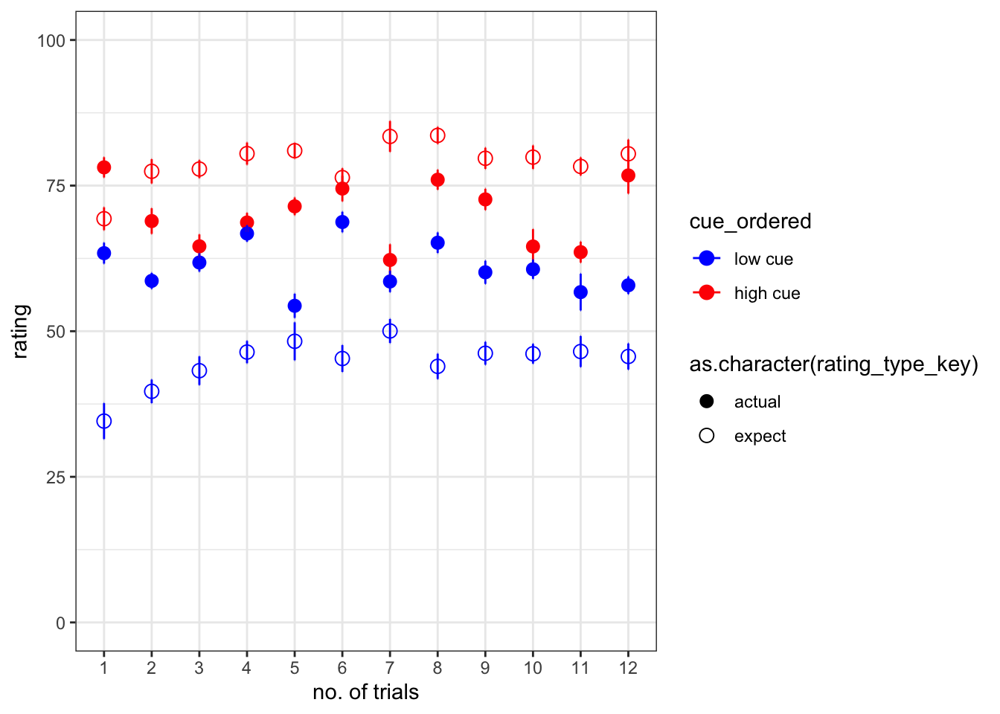
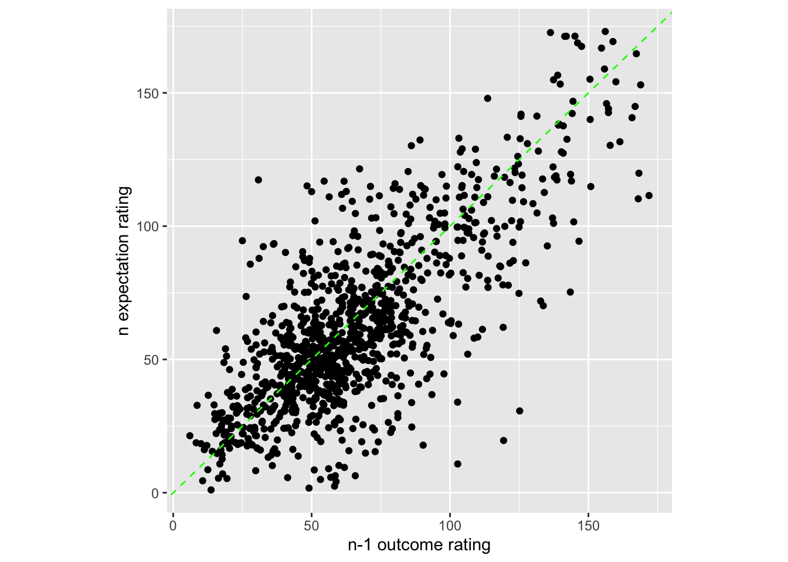
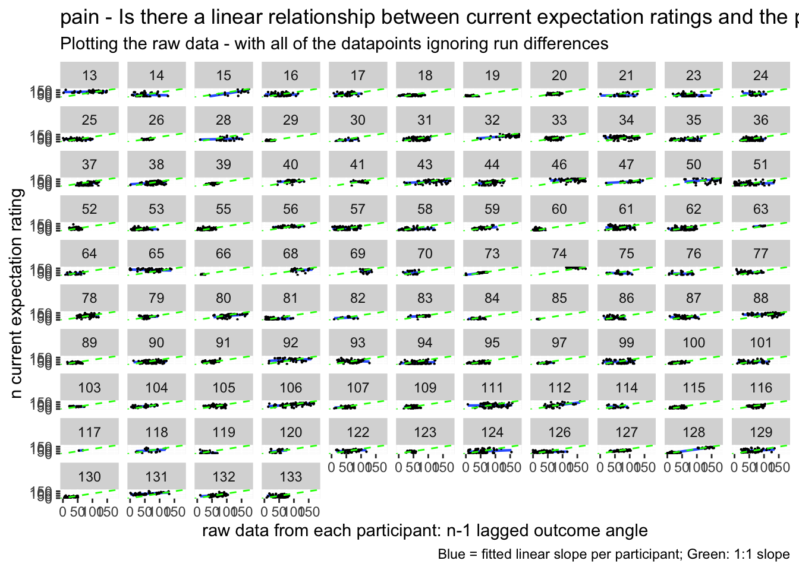
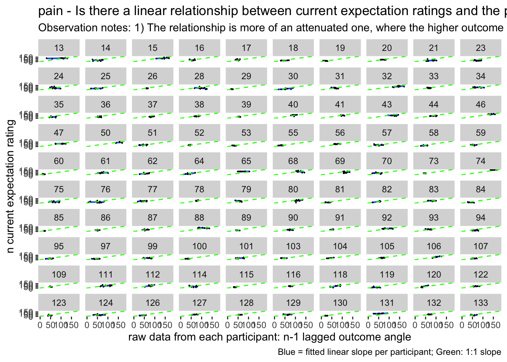
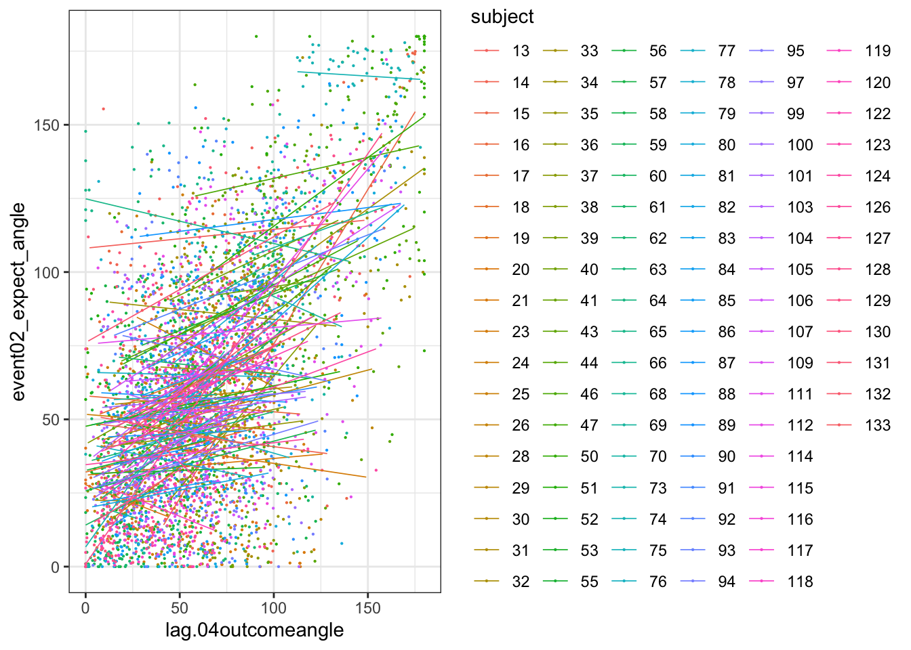
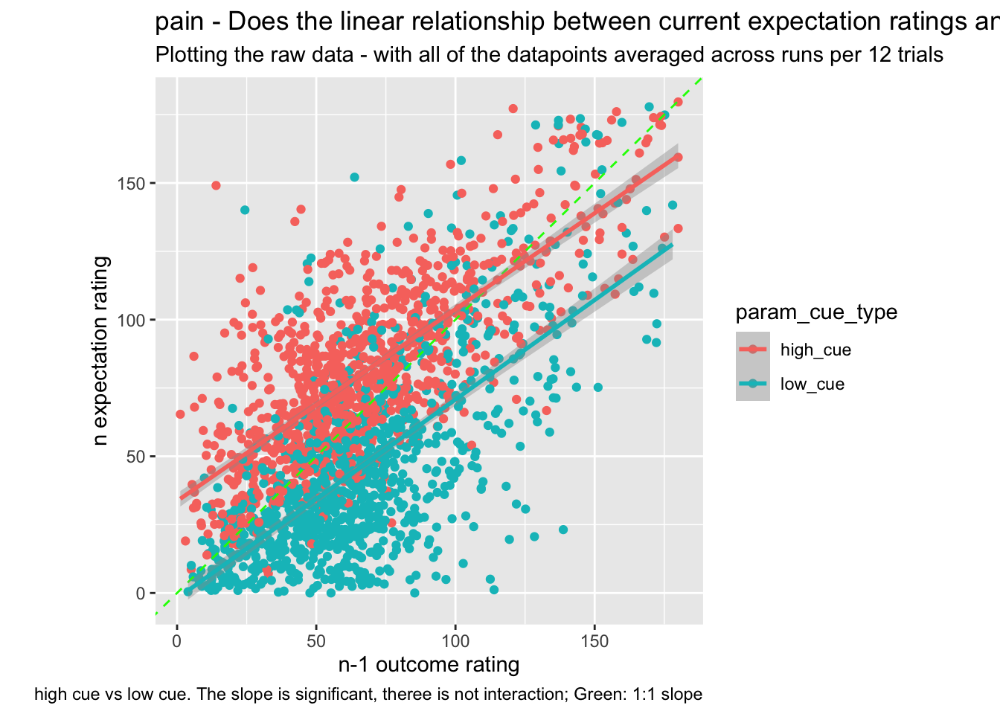

Chapter 6 expect-actual ~ cue * trial
6.1 Overview
The purpose of this markdown is to benchmark the plots from Jepma et al. (2018). Here, we plot the expectancy ratings and the actual ratings, with the high and low cues – in one panel.
Some thoughts, TODOs
- plot 2. some runs were repeated or omitted for the subjects that have more than 72 trials. I need to identify that list and work on the behavioral data.
- I need to check whether the counterbalancing was done correctly.
load data and combine participant data
main_dir = dirname(dirname(getwd()))
datadir = file.path(main_dir, 'data', 'beh', 'beh02_preproc')
# parameters _____________________________________ # nolint
subject_varkey <- "src_subject_id"
iv <- "param_cue_type"
dv <- "event03_RT"
dv_keyword <- "RT"
xlab <- ""
taskname <- "pain"
ylab <- "ratings (degree)"
subject <- "subject"
exclude <- "sub-0999|sub-0001|sub-0002|sub-0003|sub-0004|sub-0005|sub-0006|sub-0007|sub-0008|sub-0009|sub-0010|sub-0011"
# load data _____________________________________
data <- load_task_social_df(datadir, taskname = taskname, subject_varkey = subject_varkey, iv = iv, exclude = exclude)
data$event03_RT <- data$event03_stimulusC_reseponseonset - data$event03_stimulus_displayonset
# data['event03_RT'], data.event03_RT - pandas
analysis_dir <- file.path(main_dir, "analysis", "mixedeffect", "model08_iv-cue-trial_dv-expect-actual", as.character(Sys.Date()))
dir.create(analysis_dir, showWarnings = FALSE, recursive = TRUE)summary(data)## src_subject_id session_id param_task_name param_run_num
## Min. : 13.00 Min. :1.000 Length:6120 Min. :-2.000
## 1st Qu.: 41.00 1st Qu.:1.000 Class :character 1st Qu.: 2.000
## Median : 78.00 Median :3.000 Mode :character Median : 3.500
## Mean : 73.85 Mean :2.598 Mean : 3.471
## 3rd Qu.:103.00 3rd Qu.:4.000 3rd Qu.: 5.000
## Max. :133.00 Max. :4.000 Max. : 6.000
##
## param_counterbalance_ver param_counterbalance_block_num param_cue_type
## Min. :1.000 Min. :1.0 Length:6120
## 1st Qu.:2.000 1st Qu.:1.0 Class :character
## Median :3.000 Median :1.5 Mode :character
## Mean :3.141 Mean :1.5
## 3rd Qu.:4.000 3rd Qu.:2.0
## Max. :5.000 Max. :2.0
##
## param_stimulus_type param_cond_type param_trigger_onset param_start_biopac
## Length:6120 Min. :1.0 Min. :1.618e+09 Min. :1.618e+09
## Class :character 1st Qu.:2.0 1st Qu.:1.628e+09 1st Qu.:1.628e+09
## Mode :character Median :3.5 Median :1.633e+09 Median :1.633e+09
## Mean :3.5 Mean :1.636e+09 Mean :1.636e+09
## 3rd Qu.:5.0 3rd Qu.:1.644e+09 3rd Qu.:1.644e+09
## Max. :6.0 Max. :1.657e+09 Max. :1.657e+09
##
## ITI_onset ITI_biopac ITI_duration event01_cue_onset
## Min. :1.618e+09 Min. :1.618e+09 Min. : 0.00281 Min. :1.618e+09
## 1st Qu.:1.628e+09 1st Qu.:1.628e+09 1st Qu.: 1.57183 1st Qu.:1.628e+09
## Median :1.633e+09 Median :1.633e+09 Median : 3.26503 Median :1.633e+09
## Mean :1.636e+09 Mean :1.636e+09 Mean : 4.44261 Mean :1.636e+09
## 3rd Qu.:1.644e+09 3rd Qu.:1.644e+09 3rd Qu.: 6.65330 3rd Qu.:1.644e+09
## Max. :1.657e+09 Max. :1.657e+09 Max. :17.07092 Max. :1.657e+09
##
## event01_cue_biopac event01_cue_type event01_cue_filename
## Min. :1.618e+09 Length:6120 Length:6120
## 1st Qu.:1.628e+09 Class :character Class :character
## Median :1.633e+09 Mode :character Mode :character
## Mean :1.636e+09
## 3rd Qu.:1.644e+09
## Max. :1.657e+09
##
## ISI01_onset ISI01_biopac ISI01_duration
## Min. :1.618e+09 Min. :1.618e+09 Min. :0.00396
## 1st Qu.:1.628e+09 1st Qu.:1.628e+09 1st Qu.:0.99127
## Median :1.633e+09 Median :1.633e+09 Median :1.39203
## Mean :1.636e+09 Mean :1.636e+09 Mean :1.47810
## 3rd Qu.:1.644e+09 3rd Qu.:1.644e+09 3rd Qu.:1.98305
## Max. :1.657e+09 Max. :1.657e+09 Max. :2.89685
##
## event02_expect_displayonset event02_expect_biopac event02_expect_responseonset
## Min. :1.618e+09 Min. :1.618e+09 Min. :1.618e+09
## 1st Qu.:1.628e+09 1st Qu.:1.628e+09 1st Qu.:1.628e+09
## Median :1.633e+09 Median :1.633e+09 Median :1.633e+09
## Mean :1.636e+09 Mean :1.636e+09 Mean :1.635e+09
## 3rd Qu.:1.644e+09 3rd Qu.:1.644e+09 3rd Qu.:1.644e+09
## Max. :1.657e+09 Max. :1.657e+09 Max. :1.657e+09
## NA's :651
## event02_expect_RT event02_expect_angle event02_expect_angle_label
## Min. :0.6504 Min. : 0.00 Length:6120
## 1st Qu.:1.6200 1st Qu.: 29.55 Class :character
## Median :2.0511 Median : 57.58 Mode :character
## Mean :2.1337 Mean : 61.88
## 3rd Qu.:2.5589 3rd Qu.: 88.61
## Max. :3.9912 Max. :180.00
## NA's :651 NA's :651
## ISI02_onset ISI02_biopac ISI02_duration
## Min. :1.618e+09 Min. :1.618e+09 Min. : 0.1422
## 1st Qu.:1.628e+09 1st Qu.:1.628e+09 1st Qu.: 1.8597
## Median :1.633e+09 Median :1.633e+09 Median : 4.3662
## Mean :1.636e+09 Mean :1.636e+09 Mean : 4.4544
## 3rd Qu.:1.644e+09 3rd Qu.:1.644e+09 3rd Qu.: 6.2696
## Max. :1.657e+09 Max. :1.657e+09 Max. :20.0723
##
## event03_stimulus_type event03_stimulus_displayonset event03_stimulus_biopac
## Length:6120 Min. :1.618e+09 Min. :1.618e+09
## Class :character 1st Qu.:1.628e+09 1st Qu.:1.628e+09
## Mode :character Median :1.633e+09 Median :1.633e+09
## Mean :1.636e+09 Mean :1.636e+09
## 3rd Qu.:1.644e+09 3rd Qu.:1.644e+09
## Max. :1.657e+09 Max. :1.657e+09
##
## event03_stimulus_C_stim_match event03_stimulusC_response
## Mode:logical Min. :0
## NA's:6120 1st Qu.:0
## Median :0
## Mean :0
## 3rd Qu.:0
## Max. :0
##
## event03_stimulusC_responsekeyname event03_stimulusC_reseponseonset
## Mode:logical Min. :0
## NA's:6120 1st Qu.:0
## Median :0
## Mean :0
## 3rd Qu.:0
## Max. :0
##
## event03_stimulusC_RT ISI03_onset ISI03_biopac ISI03_duration
## Min. :0 Min. :1.618e+09 Min. :1.618e+09 Min. : 0.4788
## 1st Qu.:0 1st Qu.:1.628e+09 1st Qu.:1.628e+09 1st Qu.: 2.3847
## Median :0 Median :1.633e+09 Median :1.633e+09 Median : 4.0370
## Mean :0 Mean :1.636e+09 Mean :1.636e+09 Mean : 4.4869
## 3rd Qu.:0 3rd Qu.:1.644e+09 3rd Qu.:1.644e+09 3rd Qu.: 5.8867
## Max. :0 Max. :1.657e+09 Max. :1.657e+09 Max. :17.6951
##
## event04_actual_displayonset event04_actual_biopac event04_actual_responseonset
## Min. :1.618e+09 Min. :1.618e+09 Min. :1.618e+09
## 1st Qu.:1.628e+09 1st Qu.:1.628e+09 1st Qu.:1.628e+09
## Median :1.633e+09 Median :1.633e+09 Median :1.633e+09
## Mean :1.636e+09 Mean :1.636e+09 Mean :1.635e+09
## 3rd Qu.:1.644e+09 3rd Qu.:1.644e+09 3rd Qu.:1.644e+09
## Max. :1.657e+09 Max. :1.657e+09 Max. :1.657e+09
## NA's :638
## event04_actual_RT event04_actual_angle event04_actual_angle_label
## Min. :0.0171 Min. : 0.00 Length:6120
## 1st Qu.:1.9188 1st Qu.: 37.83 Class :character
## Median :2.3511 Median : 60.49 Mode :character
## Mean :2.4011 Mean : 65.47
## 3rd Qu.:2.8514 3rd Qu.: 87.70
## Max. :3.9930 Max. :180.00
## NA's :638 NA's :641
## param_end_instruct_onset param_end_biopac param_experiment_duration
## Min. :1.618e+09 Min. :1.618e+09 Min. :398.1
## 1st Qu.:1.628e+09 1st Qu.:1.628e+09 1st Qu.:398.6
## Median :1.633e+09 Median :1.633e+09 Median :398.8
## Mean :1.636e+09 Mean :1.636e+09 Mean :398.8
## 3rd Qu.:1.644e+09 3rd Qu.:1.644e+09 3rd Qu.:399.0
## Max. :1.657e+09 Max. :1.657e+09 Max. :399.5
##
## event03_stimulus_P_trigger event03_stimulus_P_delay_between_medoc
## Length:6120 Min. :0
## Class :character 1st Qu.:0
## Mode :character Median :0
## Mean :0
## 3rd Qu.:0
## Max. :0
##
## event03_stimulus_V_patientid event03_stimulus_V_filename
## Mode:logical Mode:logical
## NA's:6120 NA's:6120
##
##
##
##
##
## event03_stimulus_C_stim_num event03_stimulus_C_stim_filename
## Min. :0 Mode:logical
## 1st Qu.:0 NA's:6120
## Median :0
## Mean :0
## 3rd Qu.:0
## Max. :0
##
## delay_between_medoc subject event03_RT
## Min. :0.01409 98 : 96 Min. :-1.657e+09
## 1st Qu.:0.03708 18 : 72 1st Qu.:-1.644e+09
## Median :0.04495 25 : 72 Median :-1.633e+09
## Mean :0.04775 29 : 72 Mean :-1.636e+09
## 3rd Qu.:0.05649 31 : 72 3rd Qu.:-1.628e+09
## Max. :2.03502 32 : 72 Max. :-1.618e+09
## (Other):5664# data(data, package = 'visibly')
myvars <- names(data) %in%
c( "event02_expect_angle", "event02_expect_RT", "event04_actual_angle", "event04_actual_RT", "event01_cue_onset")
newdata <- data[myvars]
# numdata <- unlist(lapply(data, is.numeric), use.names = FALSE)
data_naomit <- na.omit(newdata)
cor_matrix = cor(data_naomit)
corr_heat(cor_matrix)## No FA options specified, using psych package defaults.## Warning in fac(r = r, nfactors = nfactors, n.obs = n.obs, rotate = rotate, : I
## am sorry, to do these rotations requires the GPArotation package to be installedISIvars <- names(data) %in%
c( "ISI01_duration", "ISI02_duration", "ISI03_duration")
ISIdata <- data[ISIvars]
# numdata <- unlist(lapply(data, is.numeric), use.names = FALSE)
ISIdata_naomit <- na.omit(ISIdata)
ISIcor_matrix = cor(ISIdata_naomit)
corr_heat(ISIcor_matrix)## No FA options specified, using psych package defaults.car::vif(lm(event04_actual_angle ~ event02_expect_angle + event02_expect_RT + event04_actual_RT, dat = data_naomit))## event02_expect_angle event02_expect_RT event04_actual_RT
## 1.016836 1.084843 1.0996086.2 plot 1 - one run, average across participants
# subject # run # param_cue # param_stim # rating_type # rating_value
#tidyr::pivot(data, key = "rating_value", value = c('event02_expect_angle', 'event04_actual_angle'))
# TODO: need to add tirla numbers
#data$trial = lapply(c("src_subject_id", "session_id", "param_run_num"), factor)
data_trial= data %>%
arrange(src_subject_id, session_id, param_run_num) %>%
group_by(src_subject_id) %>%
mutate(trial_index = rep_len(1:12, length.out = n()))data_long = data_trial %>%
pivot_longer(cols = c('event02_expect_angle', 'event04_actual_angle'),
names_to = "rating_type",
values_to = "rating_value")# # PLOT
data_long$cue_name[data_long$param_cue_type == "high_cue"] <- "high cue"## Warning: Unknown or uninitialised column: `cue_name`. data_long$cue_name[data_long$param_cue_type == "low_cue"] <- "low cue"
data_long$stim_name[data_long$param_stimulus_type == "high_stim"] <- "high"## Warning: Unknown or uninitialised column: `stim_name`. data_long$stim_name[data_long$param_stimulus_type == "med_stim"] <- "med"
data_long$stim_name[data_long$param_stimulus_type == "low_stim"] <- "low"
data_long$stim_ordered <- factor(
data_long$stim_name,
levels = c("low", "med", "high")
)
data_long$cue_ordered <- factor(
data_long$cue_name,
levels = c("low cue", "high cue")
)
model_iv1 <- "stim_ordered"
model_iv2 <- "cue_ordered"
rating <- "rating_type"
dv <- "rating_value"
trialorder_subjectwise <- meanSummary(
data_long,
c(subject, model_iv2, rating, "trial_index"), dv
)
subjectwise_naomit <- na.omit(trialorder_subjectwise)
trialorder_groupwise <- summarySEwithin(
data = subjectwise_naomit,
measurevar = "mean_per_sub",
withinvars = c("cue_ordered", "rating_type", "trial_index"), idvar = subject
)## Automatically converting the following non-factors to factors: rating_type, trial_indextrialorder_subjectwise$rating_type_key <- mapvalues(trialorder_subjectwise$rating_type,
from = c("event02_expect_angle", "event04_actual_angle"),
to = c("expect", "actual"))
trialorder_groupwise$rating_type_key <- mapvalues(trialorder_groupwise$rating_type,
from = c("event02_expect_angle", "event04_actual_angle"),
to = c("expect", "actual"))
actual_trialorder_groupwise <- trialorder_groupwise[which(trialorder_groupwise$rating_type_key == "actual"),]
expect_trialorder_groupwise <-trialorder_groupwise[which(trialorder_groupwise$rating_type_key == "expect"),]
actual_trialorder_subjectwise <- trialorder_subjectwise[which(trialorder_subjectwise$rating_type_key == "actual"),]
expect_trialorder_subjectwise <-trialorder_subjectwise[which(trialorder_subjectwise$rating_type_key == "expect"),]ggplot
# * dataset: trialorder_groupwise
# * x-axis: trial_index (sorted)
# * y-axis: rating
# * group: cue_ordered, rating_type
# * DV: mean_per_sub_norm_mean
# * error bar: se
iv1 = "trial_index"
iv2 = "cue_ordered"
data =
g <- ggplot(
data = trialorder_groupwise,
aes(x = trial_index,
y = mean_per_sub_norm_mean,
color = cue_ordered,
group = rating_type_key
)
) +
geom_point(
data = trialorder_groupwise,
aes(
shape = as.character(rating_type_key),
x =trial_index,
y = mean_per_sub_norm_mean,
group = rating_type_key,
#color = cue_ordered
),
#position = position_jitter(width = .05),
size = 3
) +
scale_shape_manual(values=c(16, 21))+
# geom_point(
# data = trialorder_subjectwise,
# aes(
# x = as.numeric(trial_index) - .15,
# y = mean_per_sub,
# color = cue_ordered
# ),
# position = position_jitter(width = .05),
# size = 1, alpha = 0.8, shape = 20
# ) +
geom_errorbar(
data = trialorder_groupwise,
aes(
x = as.numeric(trial_index),
y = mean_per_sub_norm_mean,
group = rating_type_key,
colour = cue_ordered,
ymin = mean_per_sub_norm_mean - se,
ymax = mean_per_sub_norm_mean + se
), width = .01, size = 0.5
) +
scale_color_manual(values = c("high cue" = "red",
"low cue" = "blue")) +
xlab("no. of trials") +
ylab("rating") +
ylim(0,100) +
theme_bw() ## Warning: Using `size` aesthetic for lines was deprecated in ggplot2 3.4.0.
## ℹ Please use `linewidth` instead.g 
6.3 plot 2 - average across participant, but spread all 6 runs in one x axis
load data and combine participant data
main_dir = dirname(dirname(getwd()))
datadir = file.path(main_dir, 'data', 'beh', 'beh02_preproc')
# parameters _____________________________________ # nolint
subject_varkey <- "src_subject_id"
iv <- "param_cue_type"
dv <- "event03_RT"
dv_keyword <- "RT"
xlab <- ""
taskname <- "pain"
ylab <- "ratings (degree)"
subject <- "subject"
exclude <- "sub-0999|sub-0001|sub-0002|sub-0003|sub-0004|sub-0005|sub-0006|sub-0007|sub-0008|sub-0009|sub-0010|sub-0011"
# load data _____________________________________
data <- load_task_social_df(datadir, taskname = taskname, subject_varkey = subject_varkey, iv = iv, exclude = exclude)p2 :: check number of trials per participant
data_p2= data %>%
arrange(src_subject_id ) %>%
group_by(src_subject_id) %>%
mutate(trial_index = row_number())p2 :: identify erroneous participant
# participants who have more than 72 trials will be flagged
# excluded for now
# TODO: resolve subject 98
count_trial <- data_p2 %>% count("src_subject_id")
count_trial[count_trial$n > 72,]## [1] src_subject_id freq
## <0 rows> (or 0-length row.names)p2 :: convert to long form
data_p2 <- data_p2[data_p2$src_subject_id != 98, ]
data_p2_long = data_p2 %>%
pivot_longer(cols = c('event02_expect_angle', 'event04_actual_angle'),
names_to = "rating_type",
values_to = "rating_value")p2 :: plot data
I’m plotting all of the trials per participant. In this case, there is no trialwise variability, because we’re plotting all 72 trials. Averaging across participants will be the only source of variability, reflected in the error bars
# PLOT
# I'm plotting
data_p2_long$cue_name[data_p2_long$param_cue_type == "high_cue"] <- "high cue"## Warning: Unknown or uninitialised column: `cue_name`. data_p2_long$cue_name[data_p2_long$param_cue_type == "low_cue"] <- "low cue"
data_p2_long$stim_name[data_p2_long$param_stimulus_type == "high_stim"] <- "high"## Warning: Unknown or uninitialised column: `stim_name`. data_p2_long$stim_name[data_p2_long$param_stimulus_type == "med_stim"] <- "med"
data_p2_long$stim_name[data_p2_long$param_stimulus_type == "low_stim"] <- "low"
data_p2_long$stim_ordered <- factor(
data_p2_long$stim_name,
levels = c("low", "med", "high")
)
data_p2_long$cue_ordered <- factor(
data_p2_long$cue_name,
levels = c("low cue", "high cue")
)
model_iv1 <- "stim_ordered"
model_iv2 <- "cue_ordered"
rating <- "rating_type"
dv <- "rating_value"
trialorder_subjectwise_p2 <- meanSummary(
data_p2_long,
c( model_iv2, rating, "trial_index"), dv
)
subjectwise_naomit_p2 <- na.omit(trialorder_subjectwise_p2)
trialorder_groupwise_p2 <- summarySEwithin(
data = subjectwise_naomit_p2,
measurevar = "mean_per_sub",
withinvars = c("cue_ordered", "rating_type", "trial_index"), idvar = subject
)## Automatically converting the following non-factors to factors: rating_type, trial_index## Warning in qt(conf.interval/2 + 0.5, datac$N - 1): NaNs produced## Warning in qt(conf.interval/2 + 0.5, datac$N - 1): NaNs producedtrialorder_groupwise_p2$rating_type_key <- mapvalues(trialorder_groupwise_p2$rating_type,
from = c("event02_expect_angle", "event04_actual_angle"),
to = c("expect", "actual"))
# trialorder_groupwise_p2$rating_type_key <- mapvalues(trialorder_groupwise_p2$rating_type,
# from = c("event02_expect_angle", "event04_actual_angle"),
# to = c("expect", "actual"))
# actual_trialorder_groupwise <- trialorder_groupwise_p2[which(trialorder_groupwise_p2$rating_type_key == "actual"),]
# expect_trialorder_groupwise <-trialorder_groupwise_p2[which(trialorder_groupwise_p2$rating_type_key == "expect"),]
# actual_trialorder_subjectwise <- trialorder_subjectwise_p2[which(trialorder_subjectwise_p2$rating_type_key == "actual"),]
# expect_trialorder_subjectwise <-trialorder_subjectwise_p2[which(trialorder_subjectwise_p2$rating_type_key == "expect"),]ggplot
# * dataset: trialorder_groupwise_p2
# * x-axis: trial_index (sorted)
# * y-axis: rating
# * group: cue_ordered, rating_type
# * DV: mean_per_sub_norm_mean
# * error bar: se
iv1 = "trial_index"
iv2 = "cue_ordered"
data =
g <- ggplot(
data = trialorder_groupwise_p2,
aes(x = trial_index,
y = mean_per_sub_mean,
color = cue_ordered,
group = rating_type_key
)
) +
geom_point(
data = trialorder_groupwise_p2,
aes(
shape = as.character(rating_type_key),
x =trial_index,
y = mean_per_sub_mean,
group = rating_type_key,
#color = cue_ordered
),
#position = position_jitter(width = .05),
size = 3
) +
scale_shape_manual(values=c(16, 21))+
geom_errorbar(
data = trialorder_groupwise_p2,
aes(
x = as.numeric(trial_index),
y = mean_per_sub_mean,
group = rating_type_key,
colour = cue_ordered,
ymin = mean_per_sub_mean - sd/sqrt(length(unique(data_p2_long$src_subject_id))),
ymax = mean_per_sub_mean + sd/sqrt(length(unique(data_p2_long$src_subject_id)))
), width = .1, size = 0.5
) +
scale_color_manual(values = c("high cue" = "red",
"low cue" = "blue")) +
xlab("no. of trials") +
ylab("rating") +
labs(title = paste(taskname, "- What is the pattern for actual and expect ratings?\nHow is does this pattern differ depending on high vs low cues?"),
subtitle = "1) As a sanity check, high cues leads to higher outcome ratings, compared to lower outcome ratings. 2) Within high cues, expectations ratings are higher than outcome ratings -- i.e. compensating for the high expectations 3) Within low cues, expectation ratings are lower than outcome ratings -- i.e. compenstation for more painful than expected experience, thus restuling in higher outcome ratings 4) the difference between expectation and outcome rating is smaller in the low cue condition than the high cue condition. ")+
ylim(0,100) +
theme_bw()
g
6.4 Do current expectation ratings predict outcome ratings?
Additional analyse 01/18/2023
- see if current expectation ratings predict outcome ratings
- see if prior stimulus experience (N-1) predicts current expectation ratings
- see if current expectation ratings are explained as a function of prior outcome rating and current expectation rating
when loading the dataset, I need to add in trial index per dataframe. Then, for the shift the rating?
data_a3 <- data_p2 %>%
group_by(src_subject_id, session_id, param_run_num) %>%
mutate(trial_index = row_number(param_run_num))
data_a3lag <-
data_a3 %>%
group_by(src_subject_id, session_id, param_run_num) %>%
mutate(lag.04outcomeangle = dplyr::lag(event04_actual_angle, n = 1, default = NA))
data_a3lag_omit <- data_a3lag[complete.cases(data_a3lag$lag.04outcomeangle),] trialorder_subjectwise_lagoutcome <- meanSummary(
data_a3lag_omit,
c("src_subject_id", "session_id", "param_run_num"), "lag.04outcomeangle" )
trialorder_subjectwise_lagoutcome <- meanSummary(
data_a3lag_omit,
c("src_subject_id", "session_id", "param_run_num"), "lag.04outcomeangle" )
# subjectwise_naomit <- na.omit(trialorder_subjectwise)
# trialorder_groupwise <- summarySEwithin(
# data = subjectwise_naomit,
# measurevar = "mean_per_sub",
# withinvars = c("cue_ordered", "rating_type", "trial_index"), idvar = subject
# )model.lagoutcome = lmer(event02_expect_angle ~ lag.04outcomeangle + (1 | src_subject_id) + (1|session_id) , data = data_a3lag_omit)
summary(model.lagoutcome)## Linear mixed model fit by REML. t-tests use Satterthwaite's method [
## lmerModLmerTest]
## Formula: event02_expect_angle ~ lag.04outcomeangle + (1 | src_subject_id) +
## (1 | session_id)
## Data: data_a3lag_omit
##
## REML criterion at convergence: 45706
##
## Scaled residuals:
## Min 1Q Median 3Q Max
## -3.9039 -0.6892 0.0088 0.6631 3.3561
##
## Random effects:
## Groups Name Variance Std.Dev.
## src_subject_id (Intercept) 477.18377 21.8445
## session_id (Intercept) 0.04862 0.2205
## Residual 770.50936 27.7581
## Number of obs: 4783, groups: src_subject_id, 103; session_id, 3
##
## Fixed effects:
## Estimate Std. Error df t value Pr(>|t|)
## (Intercept) 4.387e+01 2.442e+00 1.320e+02 17.97 <2e-16 ***
## lag.04outcomeangle 2.772e-01 1.596e-02 3.432e+03 17.38 <2e-16 ***
## ---
## Signif. codes: 0 '***' 0.001 '**' 0.01 '*' 0.05 '.' 0.1 ' ' 1
##
## Correlation of Fixed Effects:
## (Intr)
## lg.04tcmngl -0.428meanSummary_2dv <- function(DATA, GROUP, DV1, DV2) {
z <- ddply(DATA, GROUP, .fun = function(xx) {
c(
DV1_mean_per_sub = mean(xx[, DV1], na.rm = TRUE),
DV1_sd = sd(xx[, DV1], na.rm = TRUE),
DV2_mean_per_sub = mean(xx[, DV2], na.rm = TRUE),
DV2_sd = sd(xx[, DV1], na.rm = TRUE)
)
})
return(z)
}subjectwise_2dv = meanSummary_2dv(data_a3lag_omit,
c("src_subject_id", "trial_index"),
"lag.04outcomeangle", "event02_expect_angle")subjectwise_naomit_2dv <- na.omit(subjectwise_2dv)sp <- ggplot(data=subjectwise_naomit_2dv,
aes(x=DV1_mean_per_sub, y=DV2_mean_per_sub)) +
geom_point() +
geom_abline(intercept = 0, slope = 1, color="green",
linetype="dashed", size=0.5) +
theme(aspect.ratio=1) +
xlab("n-1 outcome rating") +
ylab("n expectation rating")
sp
# plot(subjectwise_naomit_2dv$DV1_mean_per_sub, subjectwise_naomit_2dv$DV2_mean_per_sub) + lines(x = c(0,200), y = c(0,200)) trialorder_groupwise <- summarySEwithin(
data = subjectwise_naomit_2dv,
measurevar = "DV1_mean_per_sub",
# betweenvars = "src_subject_id",
withinvars = factor( "trial_index"),
idvar = "src_subject_id"
)## Automatically converting the following non-factors to factors: src_subject_id trialorder_groupwise <- summarySEwithin(
data = subset(subjectwise_naomit_2dv, select = -c(src_subject_id)),
measurevar = "DV1_mean_per_sub",
# betweenvars = "src_subject_id",
withinvars = as.factor( "trial_index")
#idvar = "trial_index"
)## Automatically converting the following non-factors to factors: trial_indexdata_a3lag_omit$src_subject_id <- as.factor(data_a3lag_omit$src_subject_id)
lag.raw <- ggplot(aes(x=lag.04outcomeangle, y=event02_expect_angle), data=data_a3lag_omit) +
geom_smooth(method='lm', se=F, size=0.75) +
geom_point(size=0.1) +
geom_abline(intercept = 0, slope = 1, color="green",
linetype="dashed", size=0.5) +
facet_wrap(~src_subject_id) +
theme(legend.position='none') +
xlim(0,180) + ylim(0,180) +
xlab("raw data from each participant: n-1 lagged outcome angle") +
ylab("n current expectation rating")
lag.raw +
labs(title = paste(taskname, "- Is there a linear relationship between current expectation ratings and the previous outcome ratings?"),
subtitle = "Plotting the raw data - with all of the datapoints ignoring run differences",
caption = "Blue = fitted linear slope per participant; Green: 1:1 slope")## `geom_smooth()` using formula = 'y ~ x'## Warning: Removed 218 rows containing non-finite values (`stat_smooth()`).## Warning: Removed 218 rows containing missing values (`geom_point()`).
subjectwise_naomit_2dv$src_subject_id <- as.factor(subjectwise_naomit_2dv$src_subject_id)
lag.avg <- ggplot(aes(x=DV1_mean_per_sub, y=DV2_mean_per_sub), data=subjectwise_naomit_2dv) +
geom_smooth(method='lm', se=F, size=0.75) +
geom_point(size=0.1) +
geom_abline(intercept = 0, slope = 1, color="green",
linetype="dashed", size=0.5) +
facet_wrap(~src_subject_id) +
theme(legend.position='none') +
xlim(0,180) + ylim(0,180) +
xlab("raw data from each participant: n-1 lagged outcome angle") +
ylab("n current expectation rating")
lag.avg +
labs(title = paste(taskname, "- Is there a linear relationship between current expectation ratings and the previous outcome ratings?"),
subtitle = "Observation notes: 1) The relationship is more of an attenuated one, where the higher outcome ratings lead to a slightly lower expectation rating, and a low outcome leads to a higher expectation rating, when considering a 1:1 relationship. This pattern could be explained by regression to the mean type mechanism, where participants are accounting for the fact that their previous experience was extreme on either ends and that this current trial will be under/over estimated. It probably will make sense to also see the relationship between current expectation ratings influencing current outcome ratings. ",
caption = "Blue = fitted linear slope per participant; Green: 1:1 slope")## `geom_smooth()` using formula = 'y ~ x'
# https://gist.github.com/even4void/5074855ggplot(data_a3lag_omit, aes(y = event02_expect_angle,
x = lag.04outcomeangle,
colour = subject), size = .3, color = 'gray') +
geom_point(size = .1) +
geom_smooth(method = 'lm', formula= y ~ x, se = FALSE, size = .3) +
theme_bw()## Warning: Removed 218 rows containing non-finite values (`stat_smooth()`).## Warning: Removed 218 rows containing missing values (`geom_point()`).
# data_a3lag_omit$subject = as.factor(data_a3lag_omit$src_subject_id)
# model.lagoutcome = lmer(event02_expect_angle ~ lag.04outcomeangle + (1 |subject), data = data_a3lag_omit)
# # unique(as.numeric(row.names(ranef(model.lagoutcome)$src_subject_id)))
#
# data_a3lag %>%
# modelr::add_predictions(model.lagoutcome, var = 'event02_expect_angle') %>%
# dplyr::group_by(subject) %>%
# # group_by(src_subject_id) %>%
# plot_ly %>%
# add_lines(
# x = ~ lag.04outcomeangle,
# y = ~ mixed,
# opacity = .2,
# color = '#00aaff',
# size = .5,
# name = 'Mixed\nModel'
# ) %>%
# layout(yaxis = list(title = 'event02_expect_angle')) %>%
# theme_plotly()6.5 Additional analysis
01/23/2023
model.lag_cue = lmer(event02_expect_angle ~ lag.04outcomeangle*param_cue_type + (1 | src_subject_id) + (1|session_id) , data = data_a3lag_omit)## boundary (singular) fit: see help('isSingular')summary(model.lag_cue)## Linear mixed model fit by REML. t-tests use Satterthwaite's method [
## lmerModLmerTest]
## Formula: event02_expect_angle ~ lag.04outcomeangle * param_cue_type +
## (1 | src_subject_id) + (1 | session_id)
## Data: data_a3lag_omit
##
## REML criterion at convergence: 43414.8
##
## Scaled residuals:
## Min 1Q Median 3Q Max
## -4.5101 -0.6426 -0.0356 0.6291 4.0159
##
## Random effects:
## Groups Name Variance Std.Dev.
## src_subject_id (Intercept) 494.6 22.24
## session_id (Intercept) 0.0 0.00
## Residual 471.7 21.72
## Number of obs: 4783, groups: src_subject_id, 103; session_id, 3
##
## Fixed effects:
## Estimate Std. Error df
## (Intercept) 6.247e+01 2.457e+00 1.455e+02
## lag.04outcomeangle 2.606e-01 1.516e-02 4.777e+03
## param_cue_typelow_cue -3.464e+01 1.269e+00 4.675e+03
## lag.04outcomeangle:param_cue_typelow_cue 5.964e-03 1.679e-02 4.675e+03
## t value Pr(>|t|)
## (Intercept) 25.424 <2e-16 ***
## lag.04outcomeangle 17.185 <2e-16 ***
## param_cue_typelow_cue -27.293 <2e-16 ***
## lag.04outcomeangle:param_cue_typelow_cue 0.355 0.722
## ---
## Signif. codes: 0 '***' 0.001 '**' 0.01 '*' 0.05 '.' 0.1 ' ' 1
##
## Correlation of Fixed Effects:
## (Intr) lg.04t prm___
## lg.04tcmngl -0.405
## prm_c_typl_ -0.263 0.486
## lg.04tc:___ 0.227 -0.558 -0.869
## optimizer (nloptwrap) convergence code: 0 (OK)
## boundary (singular) fit: see help('isSingular')meanSummary_2dv <- function(DATA, GROUP, DV1, DV2) {
z <- ddply(DATA, GROUP, .fun = function(xx) {
c(
DV1_mean_per_sub = mean(xx[, DV1], na.rm = TRUE),
DV1_sd = sd(xx[, DV1], na.rm = TRUE),
DV2_mean_per_sub = mean(xx[, DV2], na.rm = TRUE),
DV2_sd = sd(xx[, DV1], na.rm = TRUE)
)
})
return(z)
}subjectwise_cuetype = meanSummary_2dv(data_a3lag_omit,
c("src_subject_id", "trial_index", "param_cue_type"),
"lag.04outcomeangle", "event02_expect_angle")# subjectwise_cuetype_2dv <- na.omit(subjectwise_cuetype)subjectwise_cuetype$param_cue_type <- as.factor(subjectwise_cuetype$param_cue_type)
sp <- ggplot(data=subjectwise_cuetype,
aes(x=DV1_mean_per_sub, y=DV2_mean_per_sub,
color = param_cue_type)) +
geom_point() +
geom_abline(intercept = 0, slope = 1, color="green",
linetype="dashed", size=0.5) +
geom_smooth(method = 'lm') +
theme(aspect.ratio=1) +
xlab("n-1 outcome rating") +
ylab("n expectation rating")
sp +
labs(title = paste(taskname, "- Does the linear relationship between current expectation ratings and the previous outcome ratings differ as a function of cue?"),
subtitle = "Plotting the raw data - with all of the datapoints averaged across runs per 12 trials",
caption = "high cue vs low cue. The slope is significant, theree is not interaction; Green: 1:1 slope")## `geom_smooth()` using formula = 'y ~ x'## Warning: Removed 32 rows containing non-finite values (`stat_smooth()`).## Warning: Removed 32 rows containing missing values (`geom_point()`).
# plot(subjectwise_naomit_2dv$DV1_mean_per_sub, subjectwise_naomit_2dv$DV2_mean_per_sub) + lines(x = c(0,200), y = c(0,200))